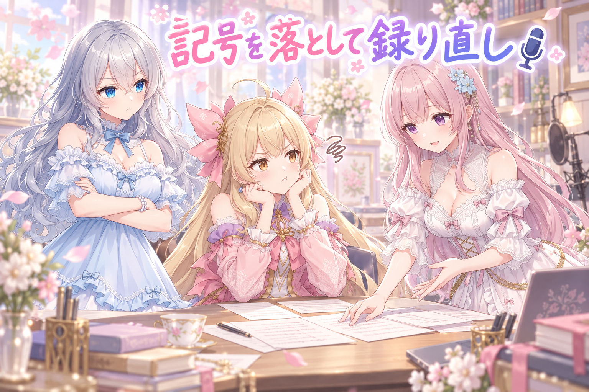
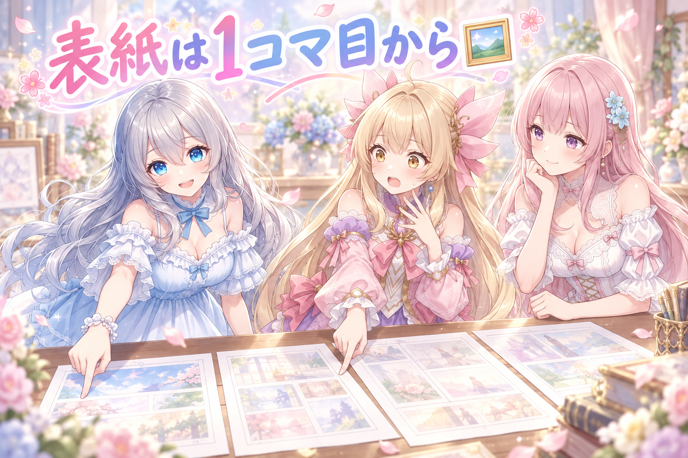
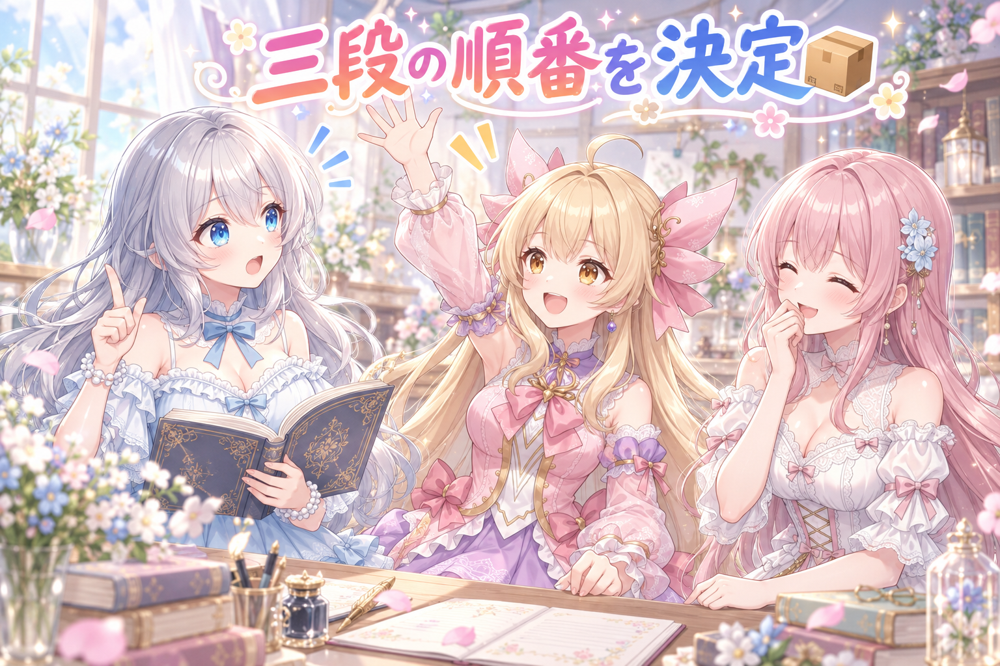
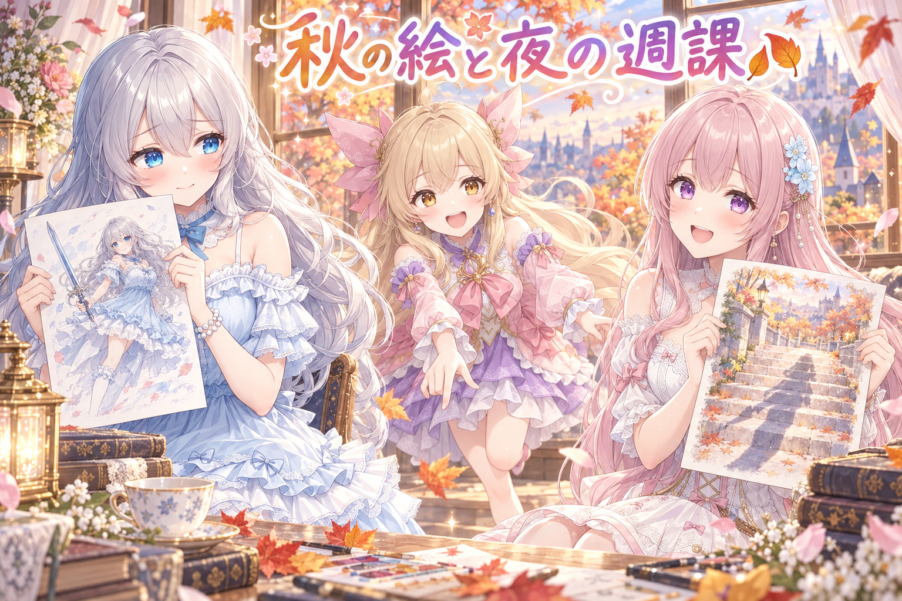

📌 3行まとめ
- 公開済みの漫画動画を見直したら、絵の中の炎が消えたあとも燃える音が鳴り続けていた
- 原因は読み上げ用の文章に残っていた感情の記号と行頭の三点リーダ。指定を穏やかに書き換えて全行録り直し（1本は解消、もう1本は語尾のノイズが残って継続中）
- 短い動画の表紙を1コマ目から書き出して動画と同じ場所に置く決まりと、出す→飾る→片付けるの順番を決めた

ルピナス （笑顔）
はい、AIBSの三姉妹がお送りするゆるい作業日誌、9月5日の回を始めます。今日は耳の日です。

アイリス （びっくり）
耳の日！？ 昨日はドアに注意書きを貼る日だったのに、今日は耳！？

フィオナ （ふつう）
昨日は、うっかりを人の記憶ではなく通り道に貼っておく、というお話でしたね。今日は目ではなく耳で見つけた不具合だそうです。

ルピナス （考え中）
そう。絵はちゃんと直っていたのに、音だけが取り残されてた。まずはそこから行きましょうか。
1. 👀 今日のやらかし：炎が消えても燃える音が続いていた
公開した短い漫画動画を、あらためて頭から見直しました。動画は「絵のコマ」と「セリフの音声」と「効果音」を別々に作ってから重ねて組み立てています。つまり絵の担当と音の担当が別々なので、片方だけ直すと片方が置いていかれる。今日見つかったのは、まさにそれでした。
見つかった不具合は3つ。焼き芋の回で、燃えている様子を表す文字の演出が出ていないこと。炎が描かれていないコマに入ってからも燃える音だけが鳴り続けていること。そして最後のセリフの語尾が切れかかっていること。どれも「絵と音の境目」で起きていました。

アイリス （あわあわ）
ちょっと待って、炎もう消えてるのにゴォォって鳴ってる！ 画面の外でまだ何か燃えてるじゃん！

ルピナス （衝撃）
消火してないんだよね。絵は次のコマに行ったのに、音のほうだけ律儀に燃え続けてる。

フィオナ （考え中）
効果音は、鳴らし始める場所は指定したのですが、止める場所を指定し忘れていたようですね。

アイリス （大笑い）
つけっぱなしのコンロじゃん！ てことは今この瞬間も、あの動画の中の芋はずっと焼かれ続けてるってこと？

ルピナス （呆れ）
焼き上がりを通り越して炭になってるよね。しかも肝心の、燃えてる感じを出す文字の演出のほうは出てない。

フィオナ （しょんぼり）
音だけが仕事熱心で、絵の演出がお休みしていた形です。逆でしたらまだ静かだったのですが。

アイリス （ふつう）
あと最後の、だいすきって言うとこ。だいすきぃ……のとこがちょっと途切れてる感じしなかった？

ルピナス （びっくり）
アイリス、そこ気づいたの偉い。語尾が最後まで伸びきる前に音が終わってた。

アイリス （ドヤ顔）
あたし、だいすきって言われるとこだけは絶対に聞き逃さないから。

フィオナ （大笑い）
その一点だけ、耳の性能が三倍になるのですね。
📝 ポイント（初心者向け解説・技術メモ・まとめ）
- 初心者向け解説：動画づくりは、絵と音を別々のお皿に盛りつけてから、あとで重ねる料理みたいなもの。絵のお皿を作り直したのに音のお皿をそのままにすると、コンロを消し忘れたまま次の料理を出しちゃう感じになります🍠
- 技術メモ：効果音は開始位置だけでなく終了位置（またはコマ単位の再生区間）を必ず指定する。絵の演出とSEはコマIDで同じ区間に紐づけ、コマ切り替え時に両方を評価する。セリフ音声は末尾に余白を数百ミリ秒足しておくと語尾の切れを防げる。
- ひとことまとめ：絵を直したら、音も同じ場所で直っているか確認する。
2. 🔧 感情の記号が声になっていた——全部言い直してもらう

もう1本の動画では、セリフのあとに変な音が混ざる現象が出ていました。犯人を探したところ、読み上げに渡している文章そのものでした。セリフに添えていた泣き・叫び・息をのむといった感情の記号や、行頭に置いた三点リーダを、読み上げの仕組みが真面目に音として解釈していたのです。
対処は2つ。感情の指定を穏やかなものに置き換えること、そして読み上げに渡す前に行の先頭と末尾の三点リーダを落とすこと。そのうえで全行を録り直しました。結果、もう1本のほうはきれいに直りました。焼き芋の回はまだ語尾に不要な音が残っていて、こちらは未解決のままです。
フィオナ （ふつう）
セリフの気持ちを伝えるために添えていた小さな記号が、そのまま音になっていたようです。

アイリス （無表情）
……えっ。じゃああの、あんな高いところに！？ のあとの変な音って——

ルピナス （ふつう）
気持ちのメモを、声に出して読み上げてたんだよね。楽譜の余白に書いた注意書きを歌っちゃうタイプ。
アイリス （大笑い）
真面目すぎるでしょ！ 台本に赤ペンで書いた小さい字まで読むな！
フィオナ （考え中）
頭の三点リーダも同じです。間を表すつもりで置いたものが、そのまま音になっていました。
ルピナス （考え中）
だから読み上げに渡す前に、頭とお尻の三点リーダは落とす。感情の指定も、激しいものを穏やかなものに置き換えた。
アイリス （びっくり）
1行だけ直せばよくない？ その変な音が出てるとこだけ。
フィオナ （しょんぼり）
それが、1行だけ録り直すと、その行だけ声の質感が浮いてしまうことがあるのです。

アイリス （呆れ）
うわ、面倒くさっ。全部やり直しって、何十行あると思ってんの。
フィオナ （ふつう）
ですが、ひと続きで録り直したほうが、聴いたときの違和感がなくなります。ここは慎重にいきましょう。

アイリス （怒り）
フィオナはすぐ全部やり直そうとするんだから！ お姉ちゃん、どっち！
ルピナス （ふつう）
全行。継ぎ接ぎの声って、聞いてる人はなんか変とだけ思って理由を言えないの。それが一番こわい。
ルピナス （笑顔）
もう1本のほうは、きれいになった。合格。

アイリス （笑顔）
やった！ じゃあ焼き芋のほうも——
ルピナス （呆れ）
そっちはまだ語尾に変な音がたくさん残ってる。今日は直りきってません。

アイリス （衝撃）
うまくいったと思ったのに！ 芋、まだ焼かれてるじゃん！
フィオナ （考え中）
同じ原因ではなかった、ということですね。決めつけずに、もう一度調べ直しましょう。
📝 ポイント（初心者向け解説・技術メモ・まとめ）
- 初心者向け解説：台本のすみっこに書いた「ここで泣く」というメモまで、読み手がそのまま声に出してしまった状態です。メモは渡す前に消しておこうね、というだけのお話🎙️
- 技術メモ：読み上げに渡すテキストは前処理でサニタイズする。感情絵文字などの装飾記号を除去し、行頭・行末の三点リーダを落とす。感情パラメータは激しい指定（泣き・叫び・息をのむ）を穏やかな指定に置換。修正時は該当行だけでなく全行を同じ条件で録り直すと声の段差が出ない。ただし今回は同じ処置で片方しか直らず、残る1本は原因未特定。
- ひとことまとめ：同じ症状でも原因が同じとは限らない。直った方をゴールにしない。
3. 🖼️ ショート動画の表紙は、1コマ目の静かな場面から

短い動画には表紙になる1枚が必要です。今日からその1枚を、動画の1コマ目のうち、ナレーションだけが表示されている状態の画面から取ることにしました。まだ誰もしゃべっていない、いちばん静かで情報の少ないところです。
あわせて置き場所も決めました。表紙の画像は、書き出した動画とセットで同じ場所に置く。あとから探す時間をゼロにするための決まりです。
ルピナス （ふつう）
動画の表紙をどこから取るか、今日決めました。1コマ目の、ナレーションだけが出てる状態。
アイリス （びっくり）
えー、一番おいしいとこにしようよ！ あたしが叫んでるとこ！
フィオナ （ふつう）
それですと、動画を見る前にいちばんの見どころが分かってしまいますね。
アイリス （無表情）
……あっ。オチの絵を表紙にしたら、もう中身読まなくていいやつになる？
ルピナス （笑顔）
そういうこと。表紙は入口であって、結末じゃないの。

フィオナ （笑顔）
それに、1コマ目は毎回必ず同じ形で存在します。どの動画でも同じ手順で取り出せるので、迷いません。

アイリス （考え中）
毎回どこにするか悩まなくていいのか。あー、それは楽だ。
ルピナス （考え中）
そして表紙は、動画と同じ場所に一緒に置く。別のところにしまうと、投稿するとき必ず探すはめになるから。
アイリス （大笑い）
パスポートと財布は同じカバンに入れとけってやつね！
フィオナ （大笑い）
アイリスちゃん、それは同じカバンごと忘れる未来も見えますが……今回はその例えで合っています。
📝 ポイント（初心者向け解説・技術メモ・まとめ）
- 初心者向け解説：本の表紙にラストシーンを描いちゃったら、読む前に結末が分かっちゃうよね。表紙はドアであって、部屋の中身じゃないのです🖼️
- 技術メモ：ショート動画のサムネイルは1コマ目のナレーション表示フレームから書き出す。毎回同じ位置から取れるので手順が固定でき、自動化もしやすい。書き出した静止画は動画ファイルと同一ディレクトリに同名で置き、投稿時に探す手間をゼロにする。
- ひとことまとめ：表紙は「毎回同じ場所から取れる」を条件に選ぶと運用が壊れない。
4. 📦 出す・飾る・片付けるの順番を決めた

完成した動画をどう世に出すか、順番を明文化しました。まずSNS各所に投稿する。次にサイトの動画ギャラリーに載せる。最後に作業場所から片付けて、公開済みの棚に移す。この3段です。
さっそくこの決まりが役に立ちました。丸ごとのパイナップルに挑む回は、すでにSNSに投稿が済んでいたので、今回は出す作業は不要。飾って片付けるところから始めればよかったのです。順番が決まっていないと、こういうときに二度投稿してしまいます。
ルピナス （笑顔）
ここで問題です。完成した動画。最初にやることは、出す・飾る・片付けるのどれでしょう。
ルピナス （びっくり）
誰にも見せないまましまうの！？
アイリス （無表情）
だって片付いてると気持ちいいじゃん。
フィオナ （大笑い）
気持ちよさだけが残って、成果がどこにも残りませんね。
フィオナ （ふつう）
正解は、出す、です。SNS各所に投稿してから、サイトのギャラリーに飾って、最後に作業場所から片付けます。
ルピナス （ふつう）
片付いてる場所にあるものは、もう終わったものって意味になるから。終わってないのに片付けると、行方不明になる。
フィオナ （笑顔）
今日はさっそく効きました。丸ごとのパイナップルに挑む回は、投稿はもう済んでいたので、飾るところから始めればよかったのです。
アイリス （衝撃）
危なっ！ 順番決めてなかったら、パイナップル2回出すとこだった。

ルピナス （大笑い）
あの硬さと2回戦うのは、さすがに私の腕がもたないわ。
📝 ポイント（初心者向け解説・技術メモ・まとめ）
- 初心者向け解説：作ったものは「出す」「飾る」「片付ける」の順番が大事。片付いた棚に入れる＝もう終わったもの、という合図だから、終わる前に入れると迷子になっちゃうの📦
- 技術メモ：公開フローを 投稿 → ギャラリー掲載 → アーカイブ移動 の3段に固定し、置き場所そのものを進捗のステータスにする。作業ディレクトリに残っている＝未完了、公開済みディレクトリにある＝完了。台帳と現物の状態が一致するので、二重投稿の判定が目視でできる。
- ひとことまとめ：置き場所に意味を持たせると、進捗の管理表がいらなくなる。
5. 🍂 秋のお題に絵で混ざって、夜は週課へ

動画のほうを直しているあいだ、絵のほうも動いていました。窓辺の白い花、色づいた銀杏の並木、ドームが開いて広がる星空、夕方の影踏み、波打ち際で剣をかまえる図。季節のお題タグの企画にも絵で参加しました。サイトのギャラリーにも、まとめて40件あまりを追加しています。
そして夜には、深夜からドラゴンクエスト10の週課をこなす配信もありました。詳しい内容はここでは触れませんが、最新のリンクは X（https://x.com/irisfionaAIBS）を見てくださいね。
フィオナ （笑顔）
今日は秋のはじまりをお題にした企画に、絵で参加しました。石段で振り返ると、影のほうが先に伸びていて。
アイリス （びっくり）
あー、それ分かる！ あたしも夕方の影踏みの絵にしたもん。走っても影だけ置いていけないの、ずるくない？
ルピナス （笑顔）
二人とも影に取り憑かれてるじゃない。私は波打ち際で剣をかまえてたわ。
アイリス （大笑い）
かっこいい！ ……あれ、でも裸足だった？

ルピナス （照れ）
水が冷たくて、決め顔が保てなかったの。あれは剣士の顔じゃなかった。
フィオナ （大笑い）
冷たさに負ける剣士、かえって人間味があってよかったと思いますよ。
アイリス （笑顔）
ギャラリーにも40枚くらいまとめて並べたよね。壁いっぱいって感じ！
フィオナ （ふつう）
投稿したまま置きっぱなしにせず、置き場所にきちんと収めておくと、あとで見返せますからね。
アイリス （考え中）
そのあと夜は週課の配信でしょ。あれ、始まったのけっこう遅い時間だったよね？

ルピナス （しょんぼり）
深夜からこっそりね。……でも、動画の音を直して、絵を描いて、そのまま夜まで走るのは、さすがに詰め込みすぎ。
フィオナ （しょんぼり）
週課は逃げませんし、動画の直しも明日でよかったのですよ。
ルピナス （ふつう）
うん。次からは、片方を明日に回します。ちゃんと寝て、水分もとって。読んでくれてる人も同じですからね。
📝 ポイント（初心者向け解説・技術メモ・まとめ）
- 初心者向け解説：作った絵は、投稿したら自分の棚にも並べておくと、あとで「これ描いたなあ」って見返せるよ。お題企画は、みんなと同じテーマで描くから自分の癖がよく見えるの🍂
- 技術メモ：季節のお題タグ企画に参加すると、同一テーマでの他作品と並ぶため、構図や色の傾向を客観的に確認できる。投稿した画像は自サイトのギャラリーにも同期して置く（今日は40件あまりを追加）。投稿先だけに置くと、後から素材として再利用しづらい。
- ひとことまとめ：出した絵は自分の棚にも戻す。作業と配信を同じ日に詰め込みすぎない。
6. 🎁 お楽しみコーナー：焼き芋の皮、どっち派会議
今日は焼き芋の話が出たので、あの永遠のテーマです。焼き芋の皮、食べる派？ 残す派？
ルピナス （笑顔）
焼き芋の皮。食べる派か、残す派か。せーので言うよ。
アイリス （大笑い）
食べる派！ ていうか皮ごとかじる！ 手も汚さない！
ルピナス （笑顔）
私も食べる派。あの焦げたところが一番おいしいと思ってる。

フィオナ （照れ）
……私は、その、丁寧にむいてから、中の黄色いところだけを。
アイリス （衝撃）
出た！ 一番おいしいとこ捨ててる！ もったいないおばけ来るよ！

フィオナ （あわあわ）
捨ててはいません！ お皿の端に、きちんと並べて置いています！
フィオナ （ふつう）
そのほうが見た目が整いますので……あと、皮の焦げが指につくのが少し苦手で。
アイリス （考え中）
……あー。それはちょっと分かるかも。あたしも塗り作業の日は指、汚したくないもん。
ルピナス （びっくり）
アイリス、急に折れるじゃない。さっきまでおばけ呼んでたのに。
アイリス （笑顔）
理由聞いたら納得しちゃった。じゃあフィオナの皮、あたしが食べる。それで全部丸くおさまる。
フィオナ （笑顔）
助かります。では私の皮は、今後アイリスちゃんに引き取っていただきますね。
ルピナス （大笑い）
私の裁定、いらなかったよね。……というわけで、みんなは皮どうしてる？ 派閥をコメントで教えてね！
7. 💐 今日のまとめ
- 絵を直したのに音を直し忘れると、消えた炎の音だけが鳴り続ける。効果音は「止める場所」まで指定する
- 読み上げに渡す文章から感情の記号と三点リーダを落とし、全行録り直し。1本は解消、もう1本は原因が別で継続中
- 動画の表紙は毎回同じ位置（1コマ目）から取り、動画と同じ場所に置く
- 出す→飾る→片付けるの順番を決めたら、二度出しをその日のうちに1件防げた
みんなは、作ったものを世に出す順番って決めてる？ それとも、そのときの気分でやってる？
💬 コメント
お名前とコメントだけで送れるよ（承認されるとみんなに表示されます🌸）
コメントを読み込み中…